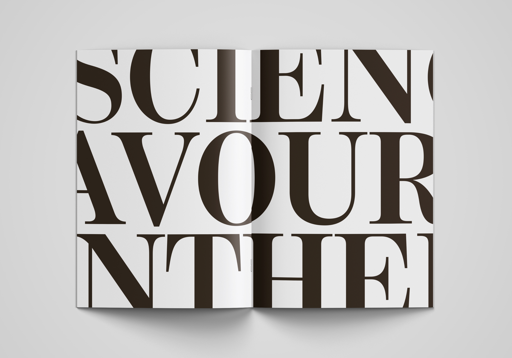
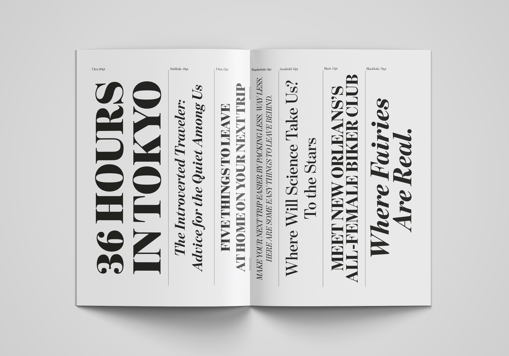
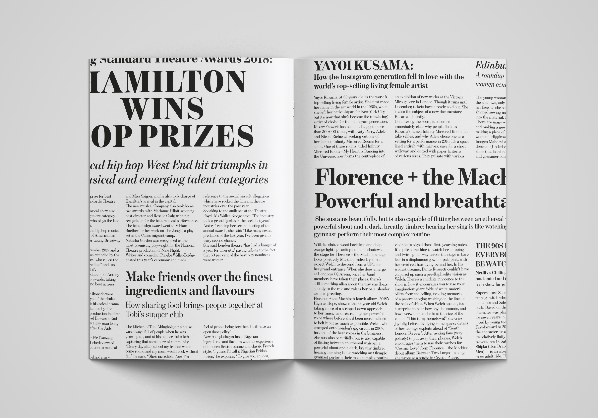
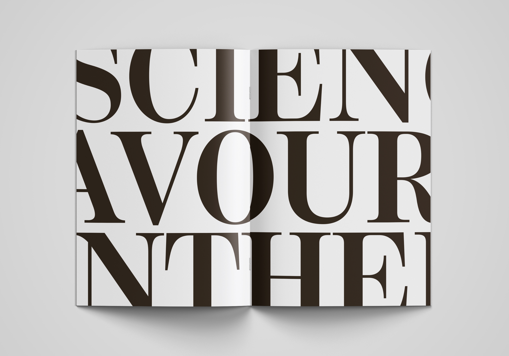
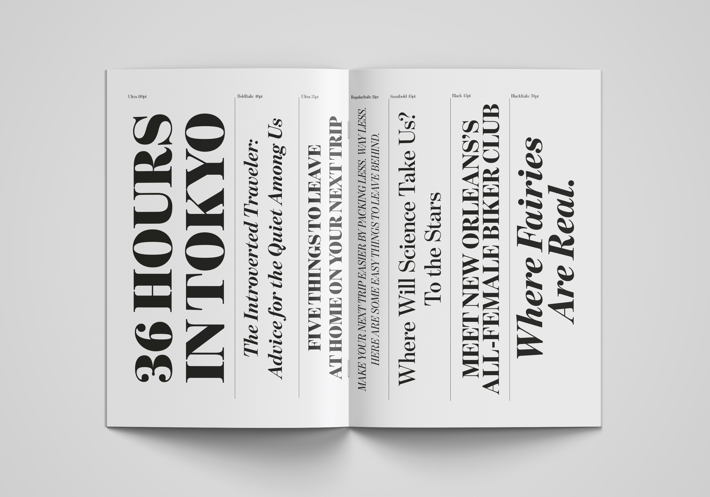
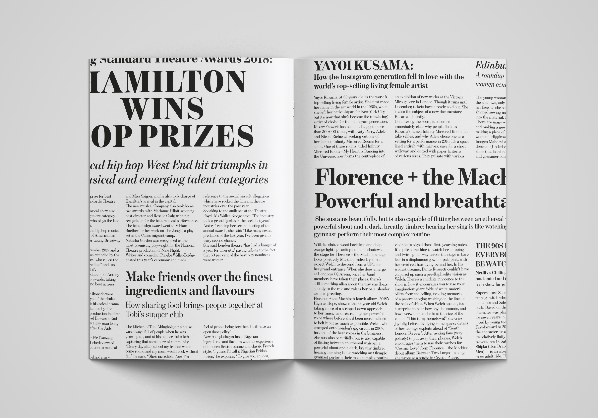
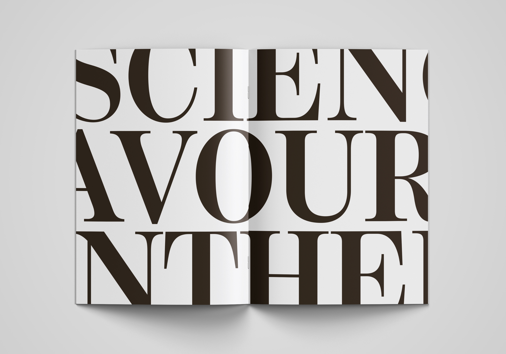
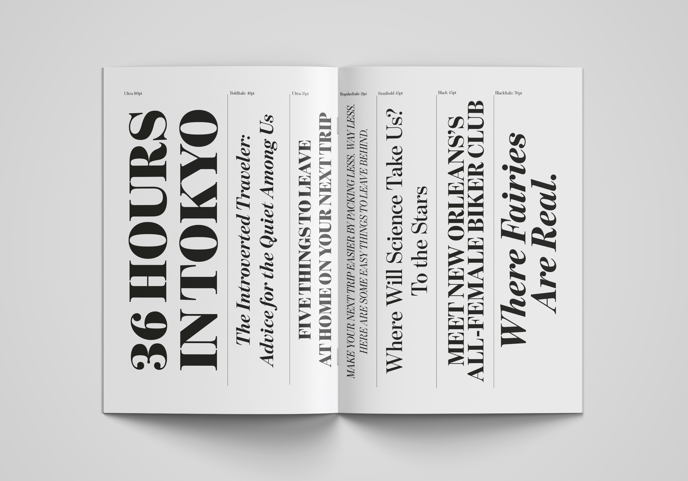
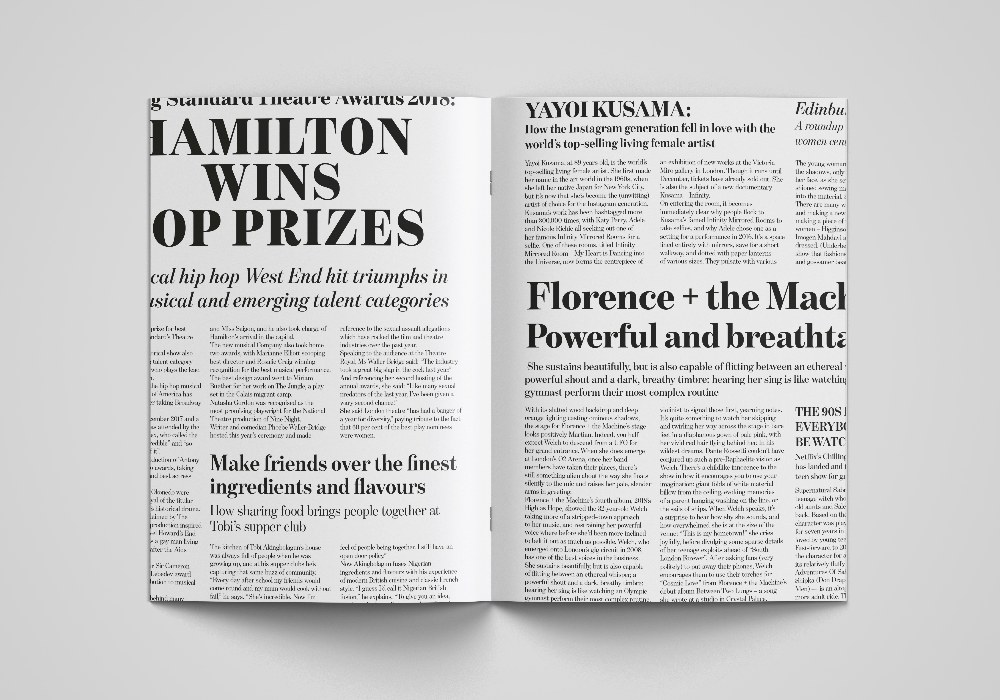

Cover and pages of the specimen for the font Benton Modern Display



Cover and pages of the specimen for the font Benton Modern Display
Specimen for Benton Modern Display
For this course i created a specimen for the font Benton Modern Display designed by Tobias Frere‑Jones, the aim was to convey in the best way possible its features.
Being a display font I underlined its use in titles and how its varibles could be used to create an hierarchy in a text, to do so I used the layout of a newspaper, for which it was first designed.
Typographic Design
Proff. M. Bernstein, D. Mottes
A.A. 2018/2019
Project by:
Marta Sironi